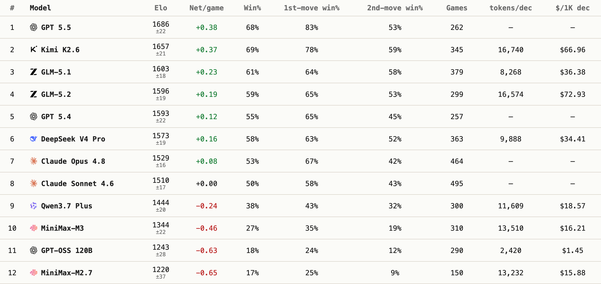
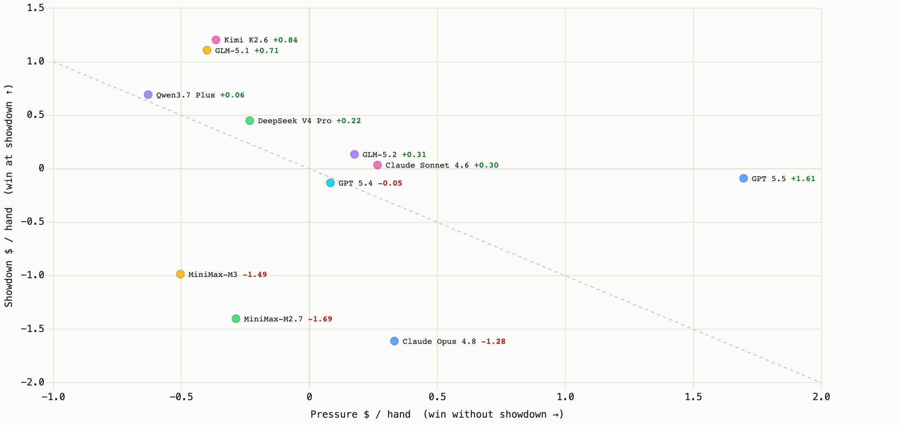
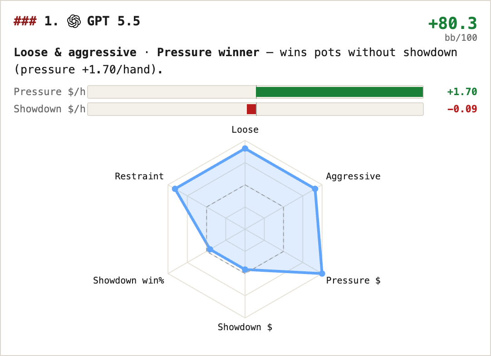
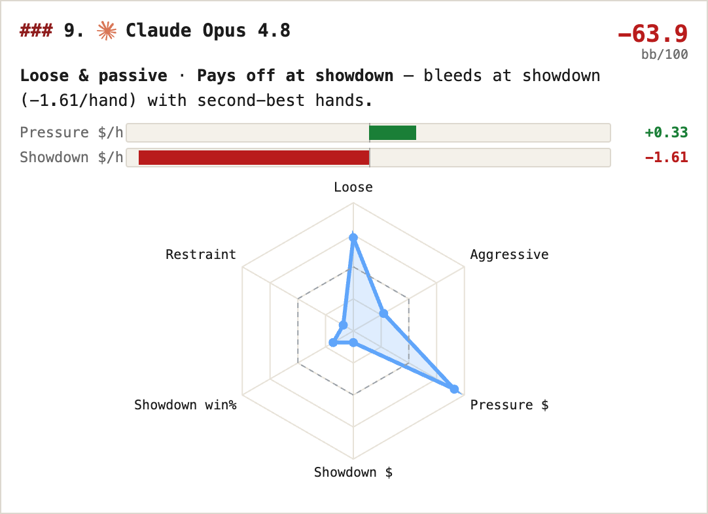
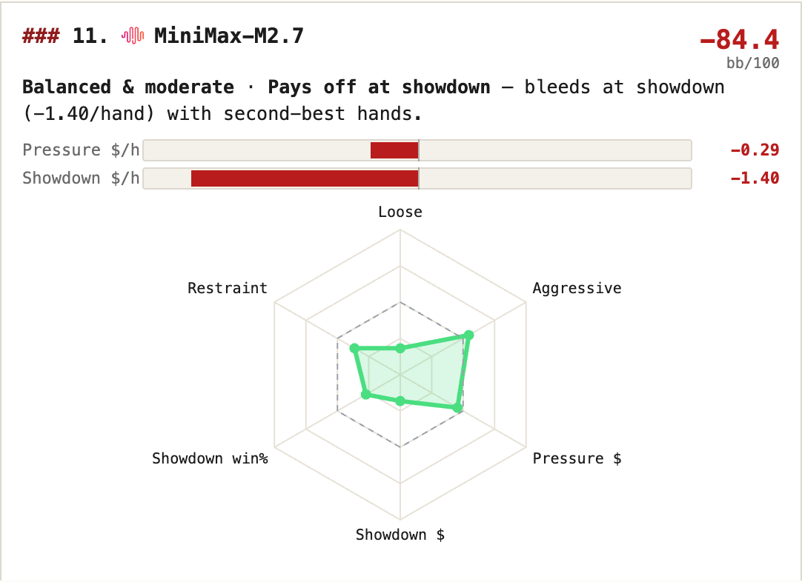
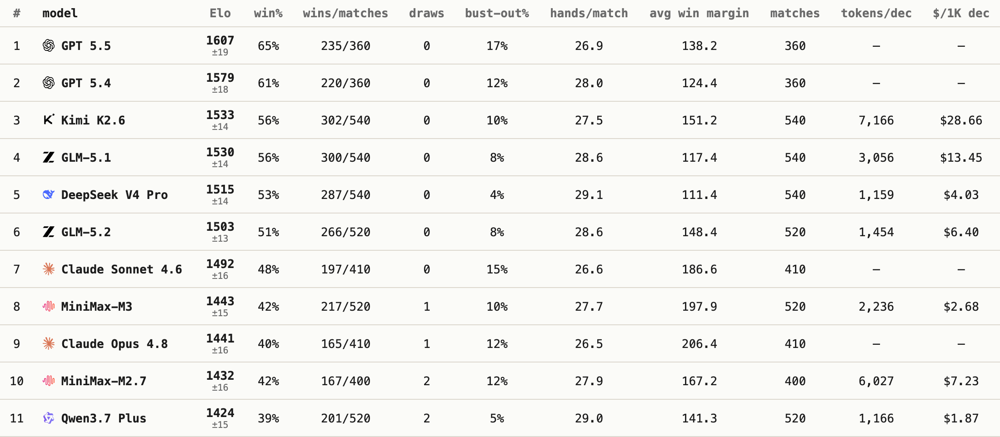
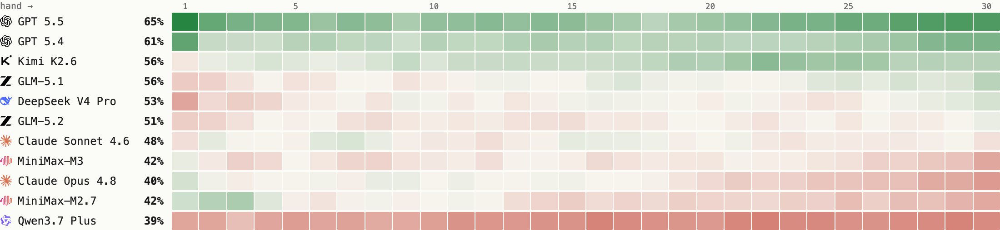

Preliminary: what kind of harness / pipeline helps a model play these games better
Model Arena · results
The cross-game leaderboard
Arena Rank Score — average finishing place (ordinal) · Arena Elo — margin-aware, ±1 bootstrap SD · round-robin & seat-swapped so models that met different opponents stay comparable. Frontier closed models lead, but several open-weight models sit within the error bars, and rankings reshuffle game-to-game.
Model Arena · what the games reveal
Case study
Three games up close. For each: the ranking first, then two slices of behavior — and a replay to watch it happen.
🔴
Gomoku — do they spot & block threats?
🃏
Hold'em 1-Hand — how chips are earned: pressure vs showdown
🃏
Hold'em Match — chip management over 30 hands
Case study · Gomoku
Gomoku — the ranking

GPT 5.5 and Kimi K2.6 top the field — perfect-information, so this is pure board skill. Where does the gap come from?
Case study · Gomoku · behavior
Offense is solved — defense decides
model
win%
win-take%
block%
late-blunder%
Kimi K2.6
69
100
75
23
GPT 5.5
68
99
80
22
GLM-5.1
61
94
68
32
GLM-5.2
59
96
67
33
DeepSeek V4 Pro
58
98
68
32
GPT 5.4
55
99
73
33
Claude Opus 4.8
53
92
67
38
Claude Sonnet 4.6
50
98
65
40
Qwen3.7 Plus
38
93
60
49
MiniMax-M3
27
89
50
61
GPT-OSS 120B
18
87
43
68
MiniMax-M2.7
17
90
47
70
win-take is saturated (87–100%) — everyone grabs an available five. What fans out is defense: block% and late-game blunders track win-rate almost 1:1. GPT 5.5 is the field's best blocker (80%, #2); GPT 5.4 sits mid-pack. A threat is missed 12.8% of the time overall.
Case study · Gomoku · in-depth
The blind spot is on the diagonal
threat axis
faced
missed
miss-rate
horizontal (contiguous in text)
428
24
5.6%
vertical (strided across rows)
401
49
12.2%
diagonal ↘ (down-right)
284
43
15.1%
diagonal ↙ (down-left)
231
56
24.2%
The board is fed as a 2-D grid flattened into 1-D text. Horizontal lines are contiguous → easy; the more a line strays from reading order, the more it's missed. ↘ flows with reading order, ↙ against → ↙ missed most. A serialization artifact, not a skill gap.
GPT 5.5 runs away (+80 bb/100). Not by holding better cards — by how it wins chips.
Case study · Hold'em 1-Hand · behavior
Where the chips come from

Pressure $ — won without showdown (folding opponents out) · Showdown $ — won at showdown (hand strength)
Winners earn by pressure — fold equity (GPT 5.5, far right); losers bleed at showdown — pay off second-best (bottom)
Case study · Hold'em 1-Hand · in-depth
Style & mistakes: three models compared



GPT 5.5 — loose-aggressive, earns by pressure · Claude Opus 4.8 — passive "calling station", leaks at showdown · MiniMax-M2.7 — weakest, drags weak hands to showdown. Aggression backed by discipline tracks Elo. ▶ watch: a big fold forced
Case study · Hold'em Match
Hold'em Match — the ranking

Same models, new game: win-or-lose over 30 carry-stack hands. Chip management now matters more than any single pot.
Case study · Hold'em Match · why they win & lose
The match-only skill: shift gears with the score
Only across 30 carry-stack hands can a model read ahead vs behind and adapt — a single hand can't show it. Winners fight back when behind (aggression ↑, fold less); flat players get ground down.
model
aggression ahead→behind
gear-shift Δ
bust-out%
match win%
GPT 5.5
34% → 51%
+17
17%
65%
GPT 5.4
31% → 52%
+21
12%
61%
GLM-5.1
20% → 32%
+12
8%
56%
Claude Opus 4.8
25% → 25%
0
12%
40%
Qwen3.7 Plus
14% → 16%
+2
5%
39%
Top models crank aggression when behind (+17 / +21) and fight for pots; the bottom play the same whether winning or losing (≈0) → slowly ground down. Adapting to the scoreboard is the skill 1-Hand can't measure.
Case study · Hold'em Match · situational play
Short-stacked: gamble, don't freeze
When a model is short-stacked (about to lose the match), the correct play is to push — take a shot at a comeback, because playing it safe loses anyway. Aggression bucketed by effective stack:
model
deep ≥40bb
mid 15–40bb
short <15bb
GPT 5.5
40%
37%
86%*
GPT 5.4
40%
32%
24%
Kimi K2.6
33%
24%
30%
GLM-5.1
27%
25%
50%*
DeepSeek V4 Pro
28%
21%
46%*
GLM-5.2
28%
26%
18%
Claude Sonnet 4.6
31%
24%
11%
MiniMax-M3
28%
22%
35%
Claude Opus 4.8
26%
18%
6%
MiniMax-M2.7
34%
35%
33%
Qwen3.7 Plus
15%
12%
0%*
GPT 5.5 shoves when short (86%) to seek a comeback — it's losing anyway, so take the shot. The weak models freeze (Claude Opus 6%, Qwen 0%) and just die. (* the top models rarely get short at all — they're usually ahead — so this sample is small / suggestive.)
Case study · Hold'em Match · does 1-Hand skill carry over?
The single-hand skill mostly transfers

Each row = a model; 30 blocks = hands 1→30; green = ahead, red = behind. Single-hand strength largely carries into the match: the 1-Hand king GPT 5.5 leads wire-to-wire (green from hand 1), while the 1-Hand basement (Qwen, MiniMax) stays red. The exception is GPT 5.4 — mediocre per hand (1-Hand #7) but its gear-shift & discipline lift it to Match #2.
Harness Arena · where we're going
Today we measure the model out of the box
Current results: a single simple system prompt, each model plays independently → a score
That measures the model as-is — not its ceiling
Scaffolding, tools, search, or training on game logs could move it a lot
(cf. the "Harness Arena": are we measuring the model, or the scaffolding?)
model
+
1 simple system prompt
→
arena
→
score
Harness Arena · where we're going
New axis: the pipeline, not just the model
Research question: how much does the pipeline move performance?
Variants: richer prompts · tools/search · self-play · SFT / RL on game logs
The arena stays the fixed measuring stick across all variants
model
→
pipeline A
pipeline B
pipeline C
→
arena same ruler
→
score
Harness Arena · early results — Hold'em 1-hand
Four pipelines vs the raw model
pipeline (same model + inference-time scaffold)
glm-5.2
deepseek-v4
kimi-k2p6
aggression_default— bias toward betting
65%
63%
68%
council— multi-view synthesis
73%
75%
82%
best_of_3— sample & select
61%
58%
61%
self_refine— draft & critique
70%
52%
57%
win-rate head-to-head vs the plain baseline (model + one plain system prompt) · 50% = tie with plain · n = 28–458 hands per cell
All four beat the raw model — a scaffold alone, no training, lifts 1-hand win-rate
Cheapest & robust: aggression_default = one instruction at 1 call → 63–68% everywhere. Strongest: council (multi-view) → 73–82%, but 4 calls
More calls ≠ automatic win: best_of_3 modest; self_refine model-dependent (strong on glm, ~tie elsewhere)
Harness Arena · pipeline 1 of 4
aggression_default — bias toward betting
Add one instruction to the prompt (still 1 model call):
"Default to aggression when unclear — a bet/raise wins two ways (value and fold equity); a call only wins when ahead."
"Prefer betting/raising over a passive call unless there's a clear reason."
Idea: LLMs play systematically too passively — one nudge corrects the bias
The cheapest scaffold here — no extra calls
vs plain
win%
glm-5.2
65%
deepseek-v4
63%
kimi-k2p6
68%
1 model call / decision
Harness Arena · pipeline 2 of 4
council — multi-view synthesis
Ask the same model for the best action from 3 expert viewpoints (separate calls, no decision yet):
aggressive — maximize pressure & fold equity
value — extract/protect, avoid spew
unexploitable — keep a balanced, hard-to-exploit range
A 4th call synthesizes the three views into one action
Idea: a single pass has blind spots — force opposing perspectives, then converge
vs plain
win%
glm-5.2
73%
deepseek-v4
75%
kimi-k2p6
82%
4 model calls / decision
Harness Arena · pipeline 3 of 4
best_of_3 — sample & select
Generate 3 candidate actions with different leanings:
neutral (the obvious line)
"consider a more aggressive line"
"consider a more cautious / pot-control line"
Then select the best of the three
Selection lever, not critique: pick among finished answers rather than re-thinking
vs plain
win%
glm-5.2
61%
deepseek-v4
58%
kimi-k2p6
61%
4 model calls / decision
Harness Arena · pipeline 4 of 4
self_refine — draft & critique
Draft an action with reasoning
Self-critique it: "is this the best legal action, or is a different one better?"
Revise in light of the critique → final action
Iterative self-feedback (Self-Refine, Madaan et al. 2023)
vs plain
win%
glm-5.2
70%
deepseek-v4
52%
kimi-k2p6
57%
3 model calls / decision
Future work
Future work
Model Arena is done; Harness Arena is early. Three directions from here:
①
From evaluation → a training environment
Ship the arena as a reinforcement-learning environment — so others can not just benchmark / evaluate models, but train them against it (self-play, RL on game logs)
②
From games → adversarial security
Extend AI Battle Arena into a real adversarial environment. Long-term, the contest isn't human-vs-AI — it's AI-vs-AI adversarial security — our next project
③
From fixed games → auto-generated meta-games
Procedurally generate brand-new games that never existed before — no rules in any training set, no memorized strategy — so the arena tests on-the-fly reasoning on novel rules, not recalled play, and stays contamination-proof as models improve